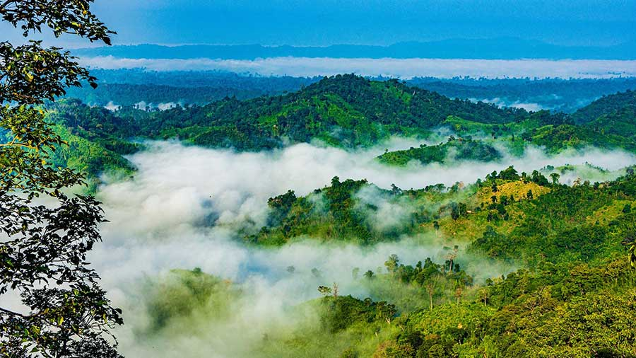
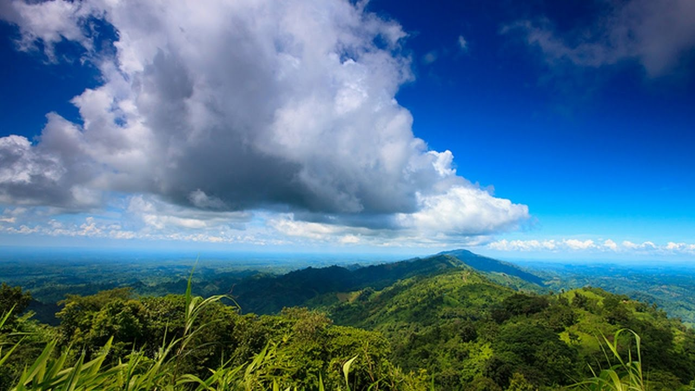

Sajek Valley

Author:Mohammad Ohidul Alam Noyon
Sajek Valley (Bengali: সাজেক উপত্যকা) is an emerging tourist spot in Bangladesh situated among the hills of the Kasalong range of mountains in Sajek union, Baghaichhari Upazila in Rangamati District.[3] The valley is 1,476 feet (450 m) above sea level.[4] Sajek valley is known as the Queen of Hills & Roof of Rangamati.
Sajek is a union located in the north of Chittagong Hill Tracts. It's under Baghaichori Upazila in Rangamati hill district, it is situated 67 kilometres (42 mi) north-east from Khagrachhari town and 95 kilometres (59 mi) north from Rangamati city. The border of Bangladesh and Mizoram of India is 8 kilometres (5.0 mi) east from Sajek.[3]
Go to
Sajek Valley
Cox's Bazar

Author:Mosammat Tahia Alam
Cox's Bazar (Bengali: কক্সবাজার, pronounced [kɔksbadʒaɾ]) is a city, fishing port, tourism centre, and district headquarters in southeastern Bangladesh. It is famous mostly for its long natural sandy beach. It is located 150 km (93 mi) south of the city of Chittagong. Cox's Bazar is also known by the name Panowa, which translates literally as "yellow flower". Another old name was "Palongkee". It is the longest sea beach in the world.
The modern Cox's Bazar derives its name from Captain Hiram Cox, an officer of the British East India Company, a Superintendent of Palongkee outpost. To commemorate his role in refugee rehabilitation work, a market was established and named after him.The city covers an area of 23.4 km2 (9.0 sq mi) with 27 mahallas and 9 wards and as of 2011 had a population of 265,500.[1] Cox's Bazar is connected by road and air with Chittagong.[2][3]
Go to
Cox's Baxar
Bandarban

Author:Mohammad Wahidul Alam
Bandarban (Bengali: বান্দরবান), is a district in South-Eastern Bangladesh, and a part of the Chittagong Division.[4] It is one of the three hill districts of Bangladesh and a part of the Chittagong Hill Tracts, the others being Rangamati District and Khagrachhari District. Bandarban city is the headquarters of the Bandarban district. Bandarban district (4,479 km2) is not only the most remote district of the country, but also the least populous (population 292,900).[5]
There is an army contingent at Bandarban Cantonment.Bandarban town is the hometown of the Bohmong Chief (currently King, or Raja, U Cho Prue Marma ရာဇာ ဦးစောဖြူ မရမာ) who is the head of the Bohmong Circle. Of the other hill districts, Rangamati is the Chakma Circle, headed by Raja Devasish Roy and Khagrachari is the Mong Circle, headed by Raja Sachingprue Marma (ရာဇာ သာစိန်ဖြူ မရမာ). Bandarban is regarded as one of the most attractive travel destinations in Bangladesh. It also is the administrative headquarters of Bandarban district, which has turned into one of the most exotic tourist attractions in Bangladesh.
Go to
Bandarban